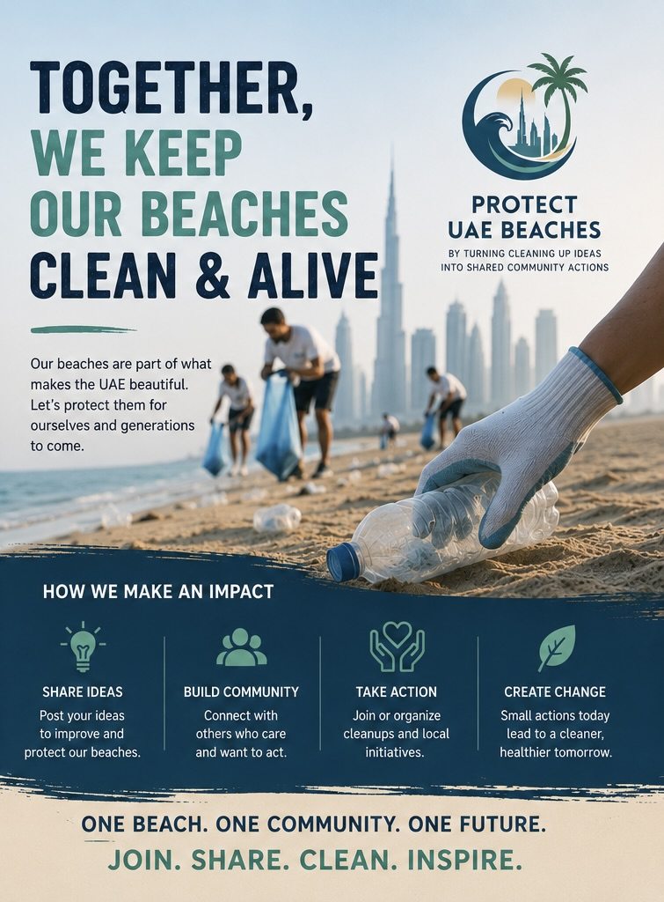
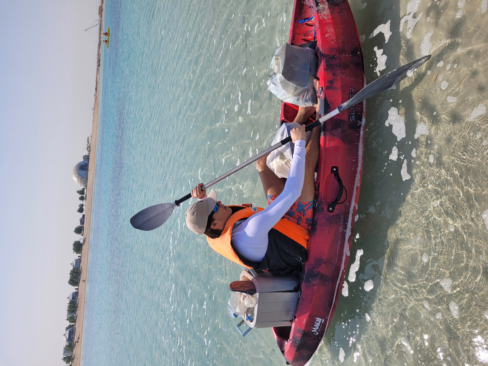
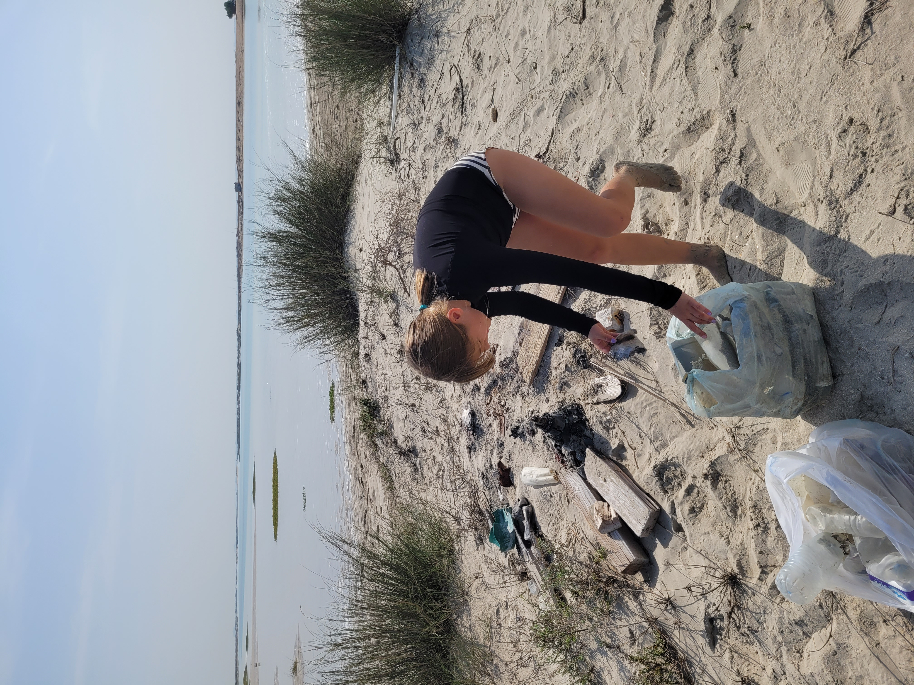
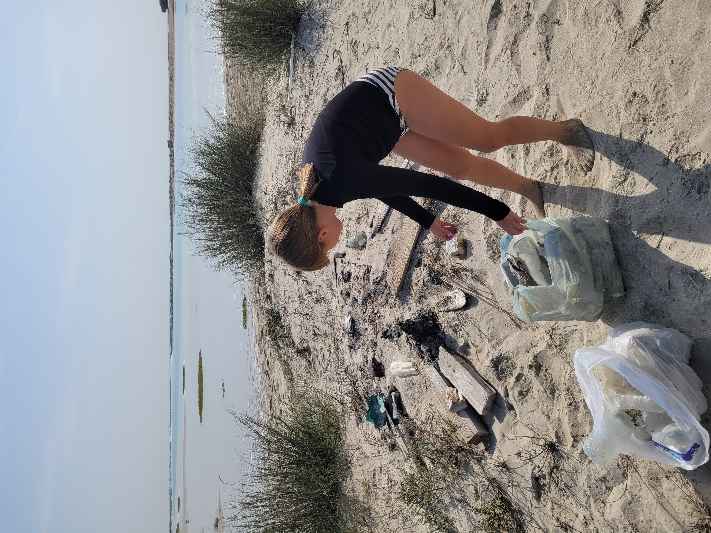
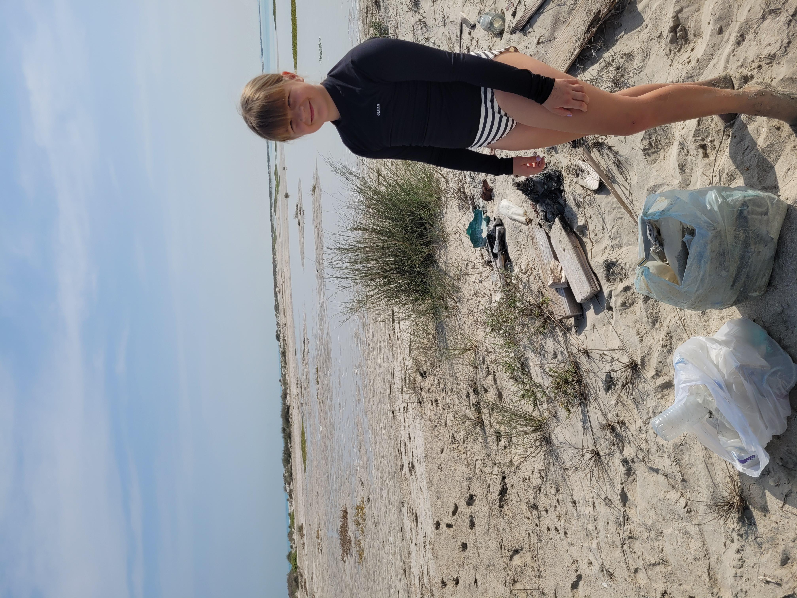
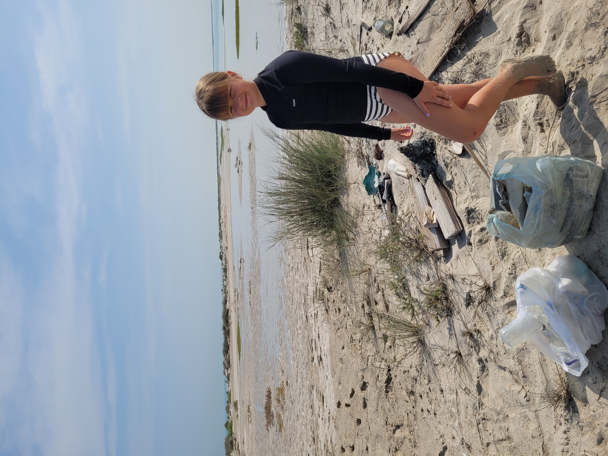
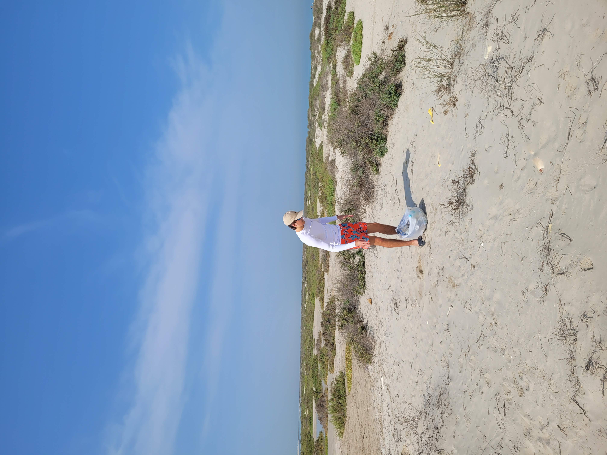
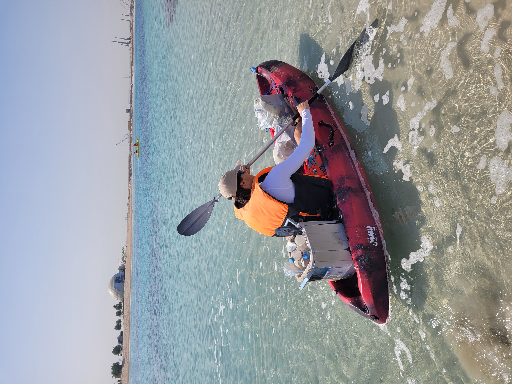
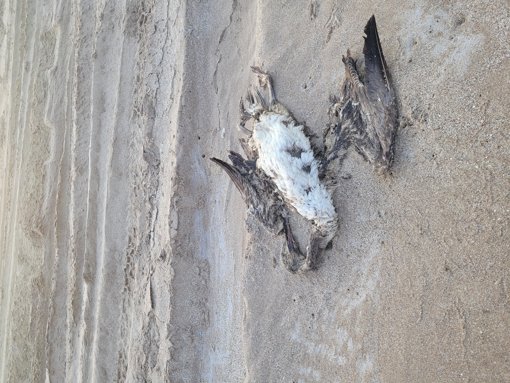

You can upload your own visuals from cleanup events, eco campaigns and field activities.
UAE Environmental Initiative
Bringing people across the UAE together for cleaner beaches and a healthier environment.
This website helps popularize litter cleanups, coastal protection and public participation by giving people one place to share stories, publish media and suggest beach areas that need attention.
Main Goal
Clean Beaches
make beach cleanups visible, easy to join and community-driven
Why This Matters
A public website that turns environmental care into shared action.

Users can recommend beaches and coastal areas in the UAE that need urgent cleanup attention.
People can share thoughts, ideas, experiences and discuss local environmental initiatives.
Conservation in Action
Documenting our coastal conservation efforts across the Emirates.










Active Shoreline Restoration
Our volunteer teams regularly survey, clean, and protect UAE shorelines, safeguarding sensitive marine ecosystems for future generations.
Our Key Programs
- Community weekend coastal cleanups
- Marine debris auditing & sorting
- Youth & school conservation workshops
- Pollution hotspot documentation & advocacy
Share Your Action Media
Participated in a recent coastal cleanup? Submit your photos and video clips to be highlighted on our community wall.
Coastal Directory
Priority UAE beach areas highlighted for community cleanup action.
Dubai
High Priority
Jumeirah Open Beach
A high-footfall public stretch where morning volunteer sweeps remove tidal debris and tourist litter before it washes out into Gulf waters.
Dubai
Active Monitoring
Kite Beach & Canal Edge
A lively water-sports hub with extensive shoreline. Ideal for targeted microplastic collection and community education along the dunes.
Abu Dhabi
Family Friendly
Abu Dhabi Corniche Beach
An expansive urban shoreline perfect for large school and corporate eco-days, volunteer orientations, and organized debris audits.
Abu Dhabi
Protected Reserve
Saadiyat Marine & Coastal Reserve
A critical nesting ground for endangered Hawksbill turtles. Cleanups focus on clearing discarded marine ropes and tangled plastic flotsam.
Sharjah
Community Hub
Al Heera Beach
A major gathering hub along the Sharjah coastline where active youth volunteer squads coordinate weekend cleanups and promote waste separation.
Sharjah
High Priority
Al Khan Beach & Lagoon
Adjoining the historical lagoon and maritime heritage area, tidal shifts deposit concentrated marine debris that requires urgent attention.
Ajman
Active Monitoring
Ajman Public Beachfront
A central coastal stretch heavily visited by families. Routine volunteer patrols help prevent windblown debris from entering the water.
Ajman
Ecology Hotspot
Al Zorah Mangrove Coast
A precious wetland and coastal mangrove forest sheltering migratory flamingos and coastal birds. Requires gentle, non-intrusive perimeter sweeps.
Community Wall
A collaborative platform to share field reports, propose cleanups, and exchange ideas.
Publish a message
Submit a cleanup report, suggest a polluted beach, or share your environmental story with volunteers across the UAE.
Community feed
Real-time reports, recommendations, and field updates shared by active volunteers across the Emirates.
Join the Movement
Ready to make a tangible impact on UAE coastlines?
Every plastic bottle removed, every shoreline surveyed, and every volunteer trained brings us closer to pristine waters and thriving marine habitats.